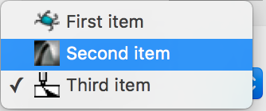
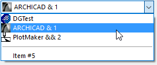

Pop-up Control
On Macintosh, the pop-up control is the standard system pop-up menu, while on Windows, it is the non-editable style system combo box.
-
 
Item type
- DG_ITM_POPUPCONTROL
GRC Specification
PopupControl x y dx dy listHeight textOffset
[iconID1 itemText1]
....
[iconIDi itemTexti]
....
[iconIDn itemTextn]
where x and y are the pixel coordinates of the upper left corner of the pop-up control, dx and dy are the width and height of the control in pixels. The listHeight and textOffset are not optional, but they are used on Windows only. listHeight is the height of the drop-down list in pixels. textOffset is the pixel offset of pop-up items' text from the left. If the optional iconIDi and itemTexti (1 <= i <= n) parameters are present, they initialize n pieces of pop-up items. iconIDi and itemTexti defines the icon and the text (given between two quotation marks) of the i-th pop-up item, respectively. Although iconIDi and itemTexti parameters are optional they must be used or omitted in pairs, i.e. iconIDi or itemTexti alone is not allowed.
Possible values of iconIDi:
-
Value Meaning NoIcon The pop-up item has no icon. 257 <= iconID <= 511 The pop-up item has an icon given in resource.
Messages
-
Message Meaning DG_MSG_CHANGE The selected item in the pop-up control is changed. The message data contains 1-based index of the previously selected pop-up item.
Modification Flag
The DGPopUpSelectItem function sets the modification flag of the pop-up control except if it is called when handling the DG_MSG_INIT message in the dialog callback function. The flag can also be set by user actions that generate DG_MSG_CHANGE messages. Use DGModified or DGResetModified to retrieve or reset (clear) the state of the modification flag.
Remarks
A pop-up control can contain normal and separator pop-up items. Call DGPopUpInsertItem and DGPopUpInsertSeparator to insert normal and separator items into a pop-up control and DGPopUpDeleteItem to delete both type of items. The number of items currently in a pop-up control can be retrieved by DGPopUpGetItemCount.
A pop-up item can have an icon and / or an item text. There are two ways to set an icon of a pop up item. One possibility is to specify the icon with its icon handle by DGPopUpSetItemIcon, the other is to set it with its resource ID by DGPopUpSetItemIconId or by DGPopUpSetItemIconResource. The icon handle can be retrieved by DGPopUpGetItemIcon, the icon ID and the resource module ID of the icon can be retrieved by DGPopUpGetItemIconId and DGPopUpGetItemIconResource, respectively. DGPopUpSetItemText and DGPopUpGetItemText serve to set and retrieve the text of the pop-up item. The icon is always on the left side of the item text. On Macintosh, the item text is rendered to the left if the item has no icon. On Windows, however, the text keeps its position given by the textOffset parameter in GRC. A separator line can contain neither an icon nor an item text.
Text style and status of each pop-up item can be changed separately by DGPopUpSetItemStyle and DGPopUpSetItemStatus. To retrieve these pop-up item properties use DGPopUpGetItemStyle and DGPopUpGetItemStatus, respectively. Each pop-up item can have a user-defined value that can be used to store any item specific user data. DGPopUpSetItemUserData and DGPopUpGetItemUserData give an access to this value.
The user can change the current (selected) pop-up item by the mouse or by keypresses through the usual ways. To change or retrieve the selected pop-up item from the program code call DGPopUpSelectItem or DGPopUpGetSelected, respectively. Before DG version 1.1.1 these functions are not available. Use DGSetItemValLong and DGGetItemValLong instead.
When more normal and/or separator pop-up items are inserted or deleted, it is advisable to enclose these function calls by DGPopUpDisableDraw and DGPopUpEnableDraw to avoid unwanted screen updates. As DGPopUpEnableDraw itself does not update the pop-up control, you should call either DGInvalidateItem or DGRedrawItem.
The width of the drop-down list depends on the length of the longest string among the pop-up items. If the drop-down list is not wide enough to display the longest pop-up item, it is extended automatically.
 Windows only:
Windows only:
- The height of the system combo box is determined by its font. DG modifies this default height so that the height of an item is equal to the size specified in GRC.
- The listHeight parameter of the GRC specification defines the height of the drop-down list in pixels. The list is automatically shortened by the system to show full pop-up items only. If the list is not large enough to display all the pop-up items at once, a vertical scroll bar appears.
Requirements
- Version: DG 2.0.0 or later
- Header: DG.h
See Also
Dialog item types
Pop-up control specific functions, DGGetItemValLong, DGInvalidateItem, DGModified, DGRedrawItem, DGResetModified, DGSetItemValLong, Callback functions
DG_MSG_CHANGE, DG_MSG_INIT